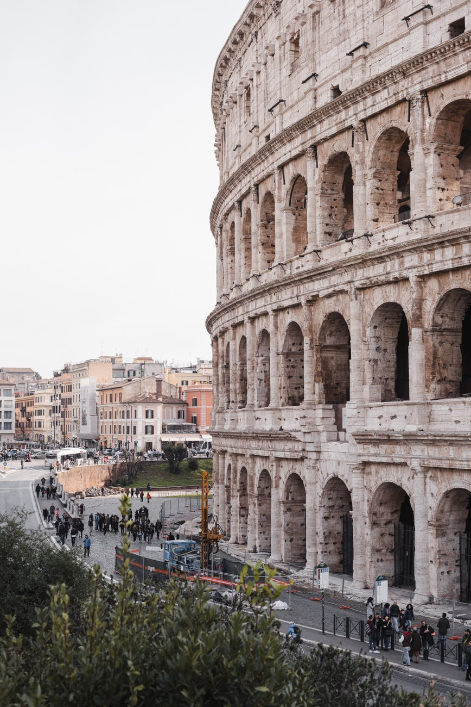

Lugares
Principales lugares donde mas se disfruta tomar cafe

ITALIA

ESPAÑA

No hay nada como una taza de cafe para estimular las celulas del cerebro
El café goza de una enorme popularidad. Preparada por la infusión de semillas de cafeto, su sabor y aroma cautivan a millones de personas en el mundo.
El origen del café no ha sido una salvedad. Una historia de leyenda, famosa por musulmanes y cristianos, charla de que en una ocasión en que el Profeta estaba enfermo, el ángel Gabriel le devolvió la salud y la fuerza viril, ofreciéndole una bebida negra como la gran Piedra Negra que hay en La Meca.
Los árabes fueron los primeros en descubrir las virtudes y las posibilidades nutritivas del cultivo del café. Por eso, durante mucho tiempo se creyó que la planta proveedora de café era árabiga.
Llegado a América en 1723, en manos de un teniente de navío francés, el café desembarcó en las Antillas luego de una extensa travesía y antes del final del siglo, el grano de café estaba distribuido en toda América.
Principales lugares donde mas se disfruta tomar cafe
Te dejamos unos de los mejores videos preparando cafe
Una vez que te despiertas y hueles el cafe, es difícil volver a dormirse
Proyecto realizado por Franco Alvarez